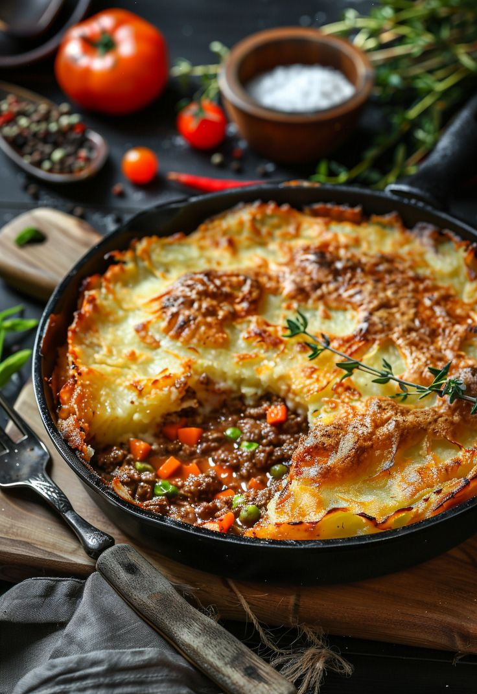

Shepherd's Pie
A classic British comfort food made with minced meat, vegetables, and topped with creamy mashed potatoes, baked until golden.

Ingredients
- 500g ground lamb or beef
- 1 onion, chopped
- 1 carrot, diced
- 1 cup peas
- 2 tbsp tomato paste
- 4 cups mashed potatoes
- Salt, pepper, herbs
Instructions
- Sauté onions, carrots in oil. Add meat and cook until browned.
- Stir in tomato paste, peas, salt, and pepper. Cook 5 more minutes.
- Spread the mixture in a baking dish and top with mashed potatoes.
- Bake at 200°C (390°F) for 25–30 minutes until golden brown.